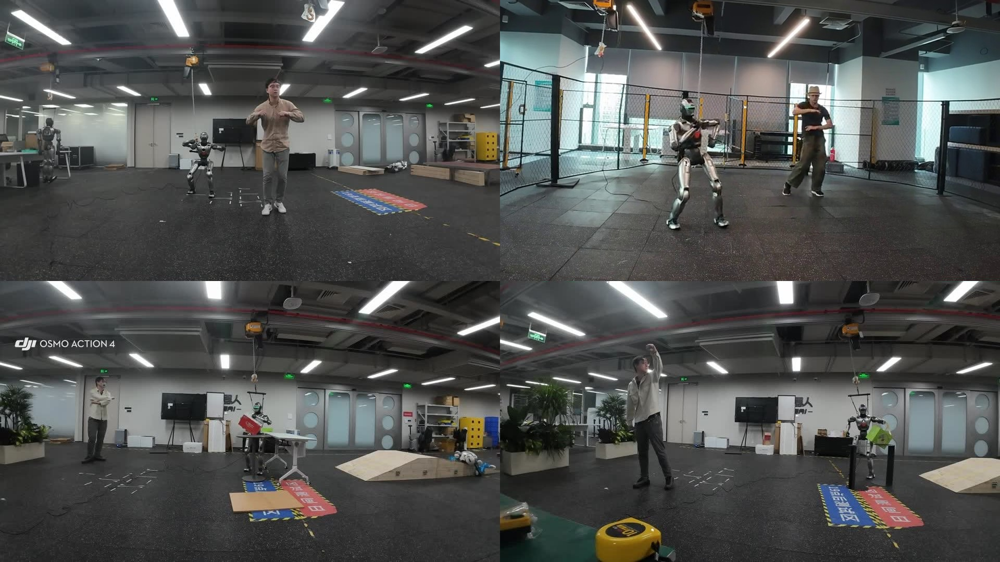
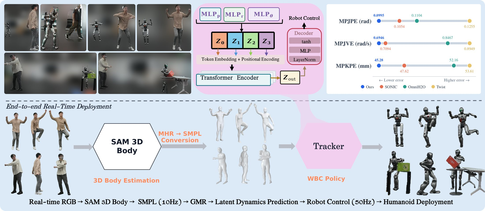
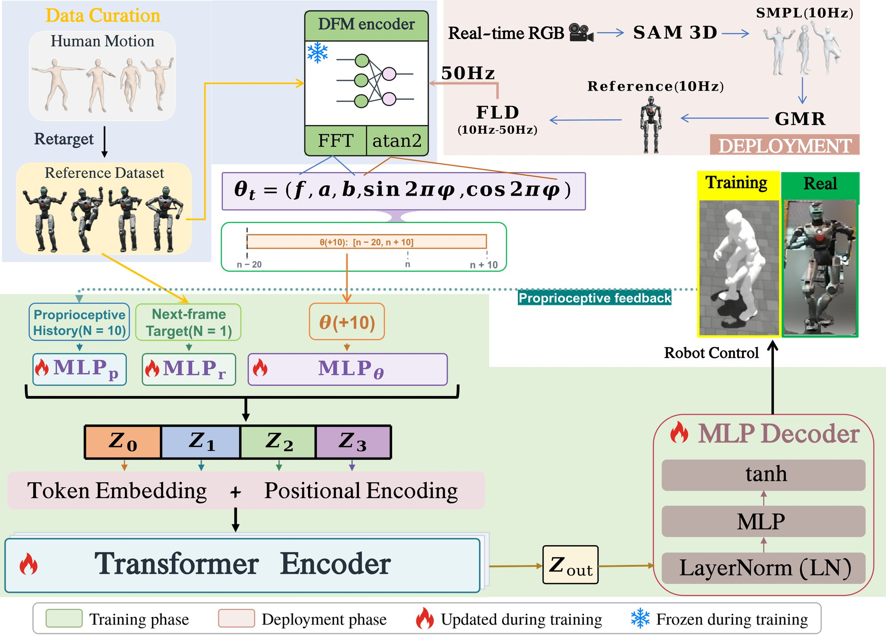

Real-Time Humanoid Whole-Body Control
from Monocular Video Streams
One RGB camera · No wearable trackers · No per-video training
Real-time whole-body imitation from monocular video requires both a robust universal tracker and high-quality real-time reconstruction. We present MoViC, a framework that uses live RGB video as a control signal for humanoid robots without wearable tracking devices. The framework combines monocular human motion reconstruction, robot retargeting, and a transformer-based behavior foundation model. The policy receives proprioceptive history, a single explicit next-step reference, and a compact frequency-domain motion representation that supplies temporal context without explicitly stacking future reference frames, which reduces the input dimension and network size. During deployment, our extrapolation method bridges the 10-Hz visual estimation with 50-Hz controller, enabling asynchronous visual processing and policy execution. Hardware experiments further demonstrate highly dynamic motion tracking and device-free teleoperation of bimanual and single-arm manipulation tasks from live monocular RGB input.
MoViC drives humanoid whole-body control from live monocular RGB video. An online video-to-motion module, SEG, reconstructs the performer with SAM 3D Body at approximately 10 Hz, retargets the motion to the robot, and extrapolates it into 50 Hz reference motions. A transformer-based behavior foundation model then tracks these references by combining proprioceptive history with an explicit next-step reference and a frequency-domain θ goal.

Overview. Bottom: monocular RGB video is reconstructed, retargeted and extrapolated, producing 50-Hz control references. Top: imitation examples (left), the transformer tracker with frequency-domain conditioning (center), and tracking errors on an unseen dance sequence (right; lower is better).

Overview of the whole-body motion-tracking framework.
(a)Frequency-domain motion encoder. A frozen encoder, built on latent dynamics, maps reference-motion windows to compact, phase-augmented frequency-domain codes θ.
(b)Transformer actor. The actor integrates ten frames of proprioceptive history, a single next-control-step reference target, and a θ token through self-attention. The output at a learnable query position is mapped to 24 joint position targets for PD control.
(c)Deployment with SEG. At deployment, reference motions are produced by the SEG module, which combines SAM 3D Body reconstruction, latent-dynamics extrapolation, and GMR motion retargeting. Extrapolation generates intermediate references for 50-Hz policy execution from an approximately 10-Hz motion stream.
(d)Training. The policy is optimized with PPO and a privileged critic that receives privileged state history and the next-step reference target, but no θ codes. The dashed branch is used only during training.
Bencaogangmu dance from live RGB
Whole-body imitation of a live performer
Dangerous dance from live RGB
(a) Bi-manual pick, reorient, and place
(b) Single-arm pick, carry, and place